Blackout Pool
On version 7.1 and above, blackout copy can also be assigned using the Blackout Pool feature. The advantage of using the blackout pool to assign blackout copy is that the chance of scheduling back to back spots with the same copy is reduced compared to regular blackout copy because blackout pool copy gets assigned from a pool of valid blackout advertisers, rather than from a single blackout advertiser.
Pool Screen
To use the Blackout Pool feature, the blackout pool advertisers must first be activated on the Pool screen. The Pool screen is accessed from the Copy screen by pressing the Pool button at the bottom of the screen.
The Blackout Pool screen has three sections:
Available advertisers: advertisers that are available to be activated as blackout pool advertisers.
Active advertisers: advertisers that are in the blackout pool and marked as currently active for the pool.
Deactivated advertisers: advertisers that were active pool advertisers but were then deactivated. Deactivated advertisers are still considered part of the blackout pool, but blackout copy from deactivated advertisers will not be assigned when new copy is assigned.
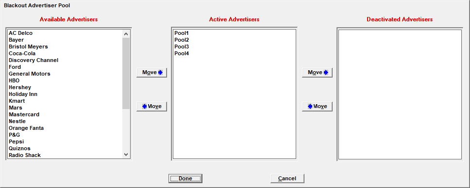
Note: active and deactivated blackout pool advertisers are marked with the letter Y in the “Pool” field on the advertiser list screen.
The Move buttons are used to move advertisers from one list to another. Once blackout pool copy has been assigned for a pool advertiser, it cannot be moved to the “available advertiser” section. It will always be part of the pool, either as active or deactivated.
When moving advertisers out of the active advertiser list, or simply attempting to exit the pool screen, if there will be less than four advertisers in the active list, a warning message will appear that more than three advertisers must be set to active. Exiting and saving will be disabled until at least four advertisers are defined as active.
Important note: the more advertisers that are active, the greater the chance that the same blackout copy will not be assigned to back to back spots.
The following types of advertisers make good candidates for the active advertiser list: advertisers that don’t require blackouts or regional copy; and advertisers that have generic copy airing across a large date span.
Creating Pool Rotations
When there are active pool advertisers, instead of creating a rotation for a specific blackout advertiser, you can create a pool rotation. (Generic rotations must still be created for the advertiser being blacked out, even when using the blackout pool feature.)
Pool rotations can be created on both the main Copy screen and using the Copy Grid.
Pool Rotation Creation on the Main Copy Screen
Creating a blackout pool rotation on the main Copy screen works very similarly to how a regular blackout rotation gets created, but instead of choosing the blackout advertiser from the “blackout instructions” dropdown, choose the “Pool” option, as shown in the picture below.
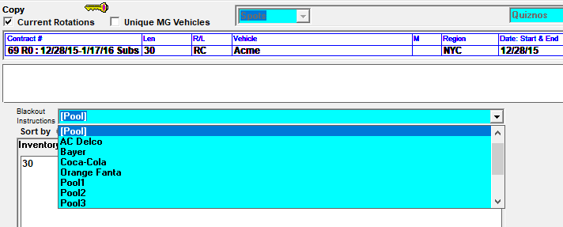
Pool Rotation Creation on the Copy Grid
Pool rotations can also be created on the Copy Grid. Simply select “Pool” from the blackout advertiser list on the Grid screen, rather than picking a specific blackout advertiser.
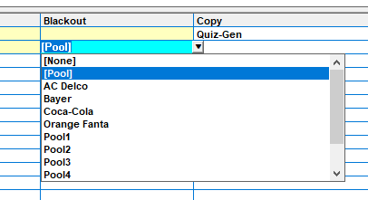
Then tab to the %/Ratio field, and enter the number 1 like the example below shows, and then tab to the next line.
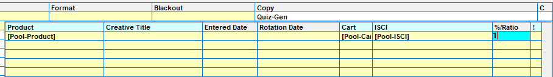
Rotation Instruction Area
Whether a blackout pool rotation was created using the main copy screen, or the copy grid, when viewing a blackout pool rotation, the Rotation Instruction area will show the length and “Pool-Cart” and/or “Pool-ISCI” (depending on whether carts, ISCIs, or both are used as defined in Traffic Site Options), as shown below, instead of specific piece of copy inventory.
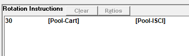
Blackout Pool Assignment Information
When assigning copy to spots, the next pool advertiser will be checked for a valid generic copy rotation that matches the date range, day of the week, time range, and spot length of the blackout pool rotation. (Copy rotations for a specific avail name will be bypassed.) This will be used to generate a list of rotations that may be valid for the blackout. The system will then check the contracts for each candidate rotation one at a time until it finds a contract that has the vehicle that the spot in question is booked on, and then it will use that generic rotation to flag the spot as receiving blackout copy from that rotation. The next spot to get assigned new blackout pool copy will be for the next blackout pool advertiser (with valid rotations). In this way, it will rotate through the different blackout advertisers.
After cycling through the blackout pool advertisers, if there is no valid blackout pool copy to assign to a spot, for example, because there’s no blackout pool advertiser with a contract with the same vehicle that the spot is booked on, or for example because the spot being blacked out is a 10 second spot and the only blackout pool rotations are for 30s and 60s, then the generic copy will be used.
Airing Vehicle Copy
The blackout pool feature is not compatible with the vehicle options setting “allow copy on airing vehicle”. The “allow copy on airing vehicle” feature makes it possible to create copy rotations for airing vehicles, but because the blackout pool feature checks contracts for vehicles that match the vehicle a spot is booked in, and because airing vehicles are not entered on contracts, these two features are not compatible with each other.
Pool Alerts
During the copy assignment process, if the system is unable to find blackout pool copy that can be assigned to a spot when it should be assigned to a spot, with the result that the generic copy will be used instead, there will be an alert shown on the Traffic and Affiliate system Alerts screen.
Alert screen
Traffic system example:
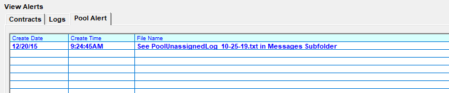
Affiliate system example:
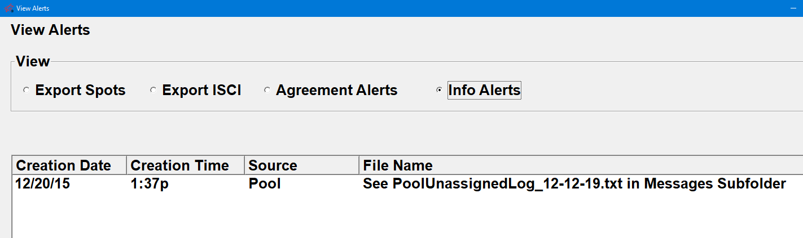
Both alert screens show the creation date, creation time, and file name of the log file that shows additional information about the alert. The Source field on the Affiliate Alert shows “pool” for a blackout pool alert. The log file can be viewed from the Messages Viewer (accessible from both the Traffic and Affiliate system) by selecting the “Pool Unassigned Log” option. The log file can also be manually retrieved from the data\messages folder.
Pool Unassigned Log
The information shown on the Pool Unassigned Log will list the vehicle, generic advertiser, date, and time, of the spots that failed to get pool copy assigned, along with the text "no copy rotation found".
Pool Unassigned Log file contents example:
10-18-2019 11:21:50am User: Julie - Pool Not Assigned to Billy Crystal AC Delco 2019-10-28 20:55:00 as no Copy Rotation found
This log file will be retained for 30 days. Blackout Pool alerts will change to “cleared” once the Creation Date is seven days in the past (using the system date).
The Alert Status report (Traffic and Affiliate) can also be run with the Blackout Pool option to see the Pool Alerts.
Troubleshooting Steps
The Alert system can be used to verify that blackout pool copy is getting assigned as intended. If there is an Alert like this, to correct the situation, some research will have to be done to figure out why the blackout pool copy wasn't getting assigned. For example, if it was because there was no rotation found for any of the blackout pool advertisers that matched the blackout pool rotation - one example of how this could happen is because the blackout pool rotation is for the week of 10/28 and all the generic rotations entered for the blackout pool advertisers end by 10/27- a new generic rotation may have to be put in for one or more of the blackout pool advertisers so that there will be a generic rotation that can be matched to the blackout pool rotation and used to assign copy to the blackout pool spot. Once those blackout pool advertiser generic rotations have been entered, reprint the log/assign copy and re-create the affiliate spots by exporting to the web or by viewing the spots on the Affiliate Affidavit screen (or by running an affiliate spot report or viewing other screens that show affiliate spots). The process of re-creating the affiliate spots should pick up the blackout pool copy if everything was done correctly.
Note that fixing the issue that caused the alert does not clear the alert. The alert will only be cleared when the creation date is seven days in the past.
Blackout Pool Example
This is a simplified example of how the blackout pool works in practice.
In this example, there are four advertisers that are part of the list of active blackout pool advertisers: Pool1, Pool2, Pool3, and Pool4. (In reality, it would be better to have more than four advertisers, in order to help reduce the chance of the same copy airing back to back. The more copy there is to rotate through, the less chance there is of that happening.)
For each of the four blackout pool advertisers, there’s a 30 second generic rotation for the vehicle Acme (a package vehicle), for the dates 12/28/15-3/6/16, for all days of the week, 12m-12m, like the picture below shows for the advertiser Pool1.
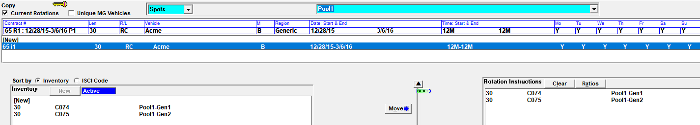
The advertiser that is being blacked out is Quiznos. First a 30 second generic rotation was created for Quiznos for the week of 12/28/15-1/3/16 for the vehicle Acme, for all days of the week, 12m-12m, and then a blackout pool rotation was created for the New York region, as shown in the picture below.
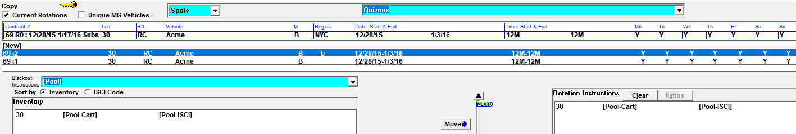
The Quiznos spots in question are booked on a vehicle called “George Carlin”. When affiliate spots are being created, the system will find the rotations for the pool advertisers that match the date range and other criteria, and then go back to the pool advertiser contracts to see if the vehicle “George Carlin” appears on one. When it finds one, it will use the appropriate copy, replacing the Quiznos copy for the New York region with the generic blackout pool copy.
Blackout pool copy will be used by the Affiliate system when generating exports such as the Counterpoint Affidavit export. The report example below shows the blackout pool copy for a station in the NY region. The words “Blackout: Pool” appears in red, under the region name, for each piece of blackout pool copy.
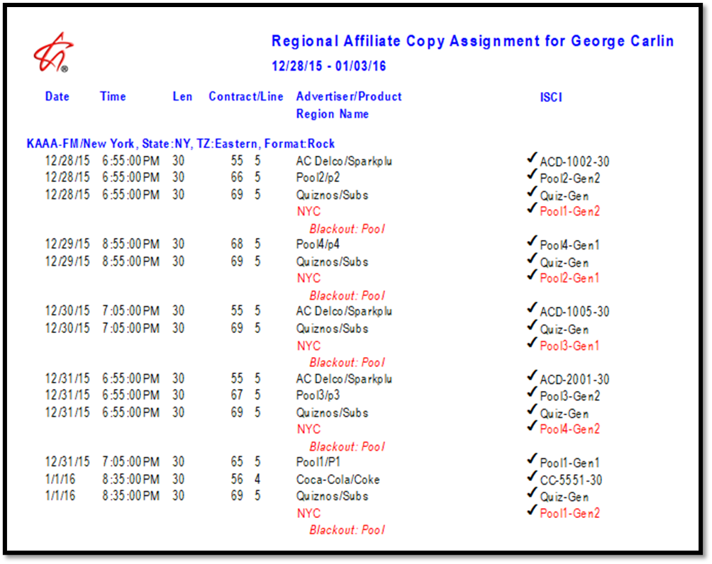
As shown on the report above, there are five Quiznos spots that are blacked out by the different pool advertisers. For example, the Quiznos spot on 12/28/15 at 6:55pm is blacked out with the blackout pool advertiser Pool1, and the ISCI code Pool1-Gen2. The Quiznos spot on 12/29/15 at 8:55pm is blacked out with the blackout pool advertiser Pool2, and the ISCI code Pool2-Gen1. (In addition to the Regional Affiliate Copy Assignment report, the following reports also have a special notation for blackout pool copy: Regional Affiliate Copy Tracing, and Copy Rotations by Advertiser.)
The Affiliate Affidavit screen shows the affiliate spots and the blackout pool advertisers and copy when appropriate. The first picture below shows the Affiliate Affidavit screen for a station in the NY region, with the pool advertiser spots replacing the Quiznos spots. For example, instead of showing a Quiznos spot on 12/28/15 at 6:55pm, it’s showing the blackout advertiser Pool1.
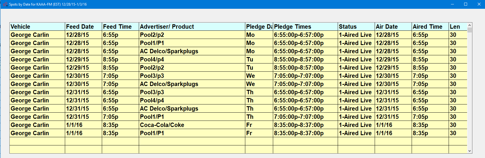
The picture below shows the Affiliate Affidavit screen for a station outside of the NY region. The Quiznos spots are not blacked out for this region, so Quiznos spots appear normally.
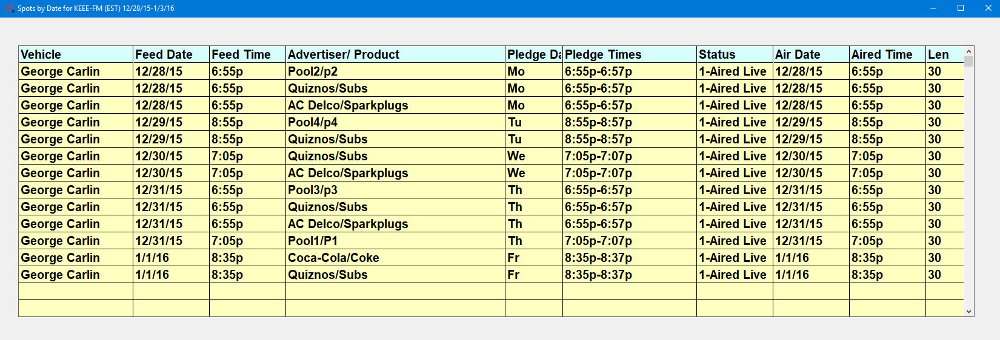
If blackout pool copy failed to get assigned to a blackout pool rotation, a pool alert will appear. Use the “Pool Unassigned Log” to get more information about the vehicle, date, and advertiser, so that the problem can be resolved.